All of STA 101 in 75 minutes
Lecture 1
What are we studying?
- Data analysis
- The art of transforming messy, incomplete, imperfect data into knowledge;
- Knowledge often takes the form of pictures and a concise set of numerical summaries;
- Statistical Inference
- Quantifying our uncertainty about that knowledge;
- Reporting this faithfully to help people make decisions.
Before we begin
Any questions about the syllabus?
. . .
If anything occurs to you later, please post on Ed.
Today
. . .
We’ll take…
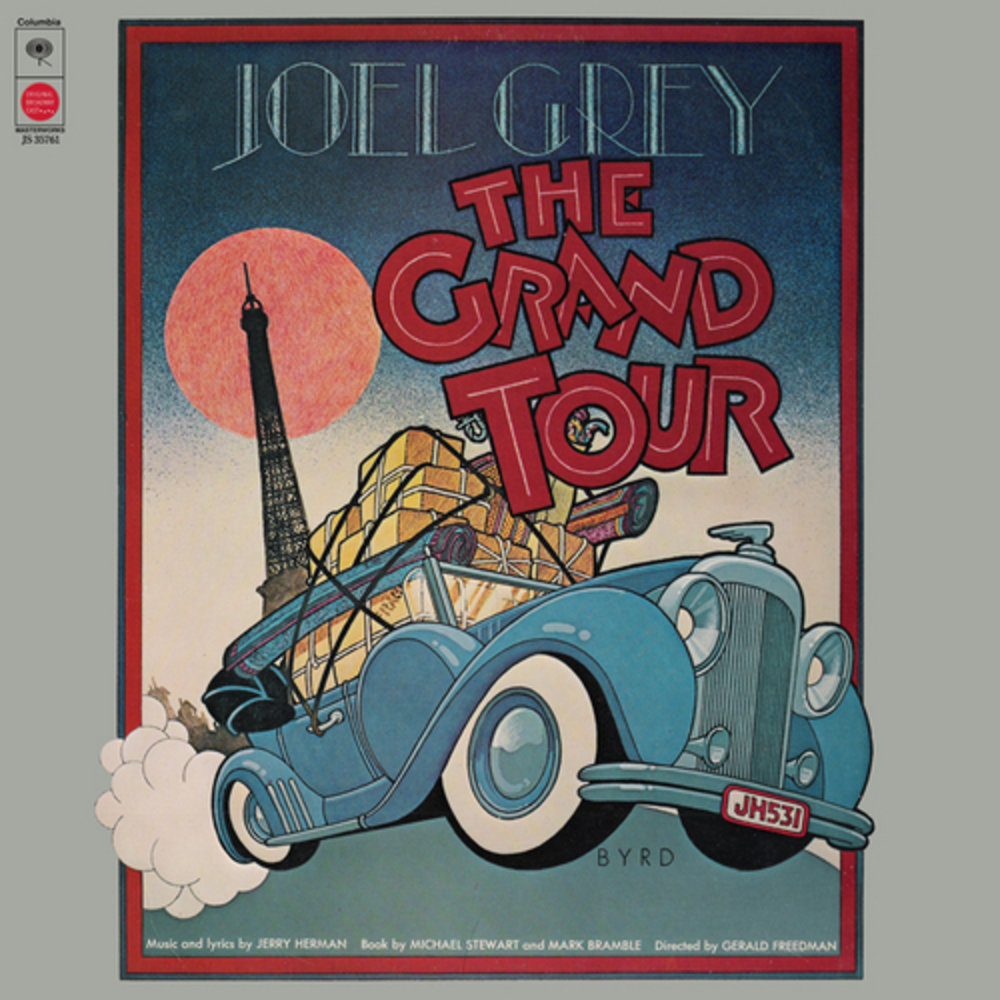
So that you can see…
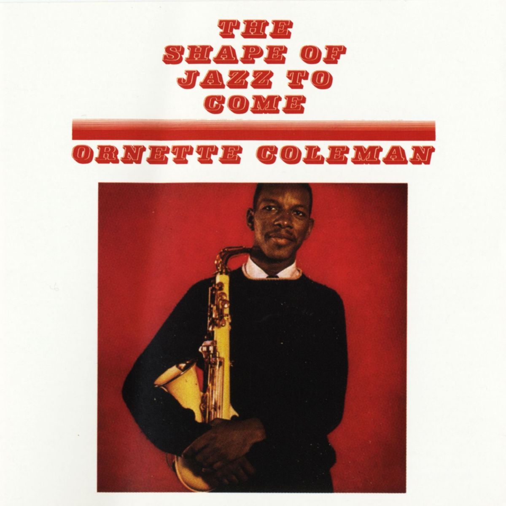
Today
We’ll speedrun essentially all of the main ideas of the course so that you can get a sense of the outline of everything. Then we’ll spend the next fourteen weeks elaborating;
It’s gonna be a lot, and some things might be easier to follow than others. All you have to do is sit back and let it wash over you. We have the whole rest of the course to refine;
Please ask questions!
Basically
0. The toolkit
Access your container

- Visit the Duke Container Manager (and log in with your NetID);
- (If you haven’t already, reserve the STA101 container on the right-hand-side)
- Click STA101 under “My reservations” on the left-hand side;
- Login, start, and give it a sec to launch in your browser.
R + RStudio

R is a programming language that statisticians created to make their work easier. If you learn to “speak” this language, you can instruct a computer to perform data analysis tasks that would be tedious to perform by hand.

RStudio is a convenient interface that allows you to use R in a clean and organized way. It is an example of an integrated development environment (IDE), but don’t worry about that.
R + RStudio

Source: Modern Dive.
The lay of the land

Grab today’s files
- Double-check that you have the course project loaded in the upper right corner;
- Go to the Git tab in the upper right pane and click Pull.
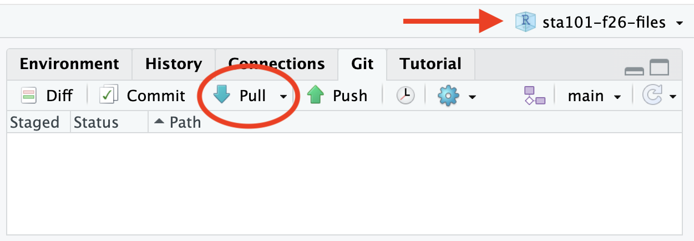
Packages
- Some of R’s functionality is built-in (like the sink or the dishwasher), and other stuff is an add-on you need grab separately (like a food processor);
- The add-ons are bundled in packages, which you can load in by typing commands like this:
- Such commands will appear once at the top of pretty much every document you work on.
The tidyverse
The tidyverse is the package we will use most often. In fact, it’s really a “meta-package” that bundles many smaller packages that we will use:

-
ggplot2: data visualization; -
dplyr: data transformation; -
readr: data import and export; - …and so on.
Quarto
Quarto is a technical publishing system that allows you to write documents where text, math, code, and the output of that code are seamlessly integrated in a reproducible way.
The lay of the land

How it works
This is pretty much it:
Edit the
.qmdfile → hit Render → get a
- Fully reproducible reports – each time you render the analysis is run from the beginning;
- Code goes in cells (between the three back ticks);
- Written English goes outside cells, the same way you would write in Google Docs or MS Word;
- Every application exercise, lab, project, etc. is a Quarto document;
- You’ll always have a template Quarto document to start with;
- The amount of scaffolding in the template will decrease over the semester.
Two important concepts
. . .
Computational reproducibility:
- If you give me your code and your data and I hit “Run,” do I get the same numbers and the same pictures that you published in your article?
- If so…phew! If not…what the 🤬?
. . .
Scientific replication:
. . .
- Can new researchers conduct an independent analysis with different data and reach the same substantive conclusions that you did?
- Just because your analysis is computationally reproducible does not mean that you have a robust result that generalizes.
. . .
Our tools will help you achieve the first, which is necessary (but not sufficient!) for the second.
1. A research question
Minimum wage policy
What do you think?
Is a higher minimum wage good? bad? neutral? idfk?
The ECON 101 story
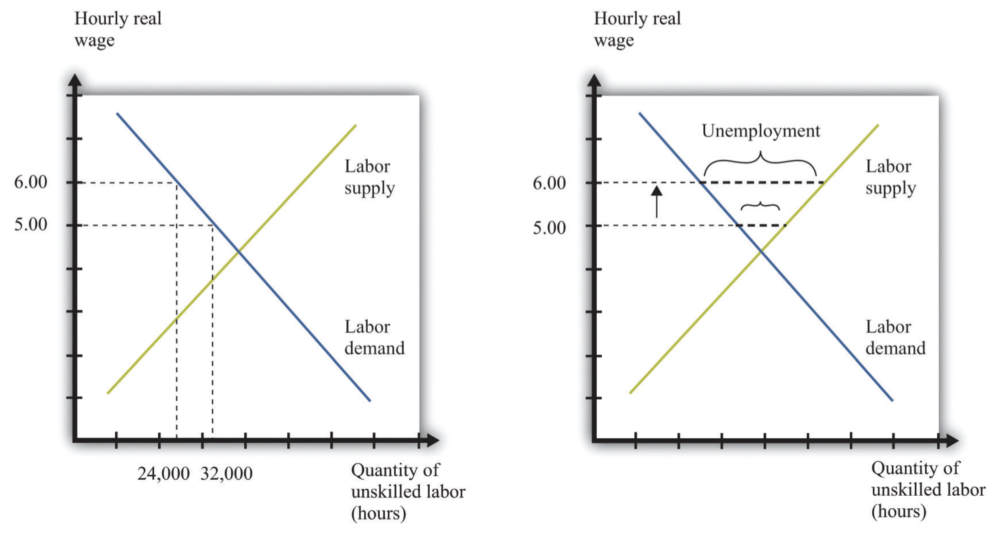
The ECON 101 story
The reasoning goes like this:
- if you make something more expensive, then people generally do less of it (“demand curves slope down”);
- the wage is the price that firms pay to employ people. Make it more expensive to employ people, and firms will do less of it.
. . .
This theoretical argument motivates a prediction about the world:
. . .
Raising the minimum wage decreases employment (puts people out of work).
The question
If you raise the minimum wage, does it decrease employment?
- If no: are minimum wage hikes a “free lunch” for reducing poverty?
- If yes: how big is the decrease? Is it worth the trade-off: more people working at lower wage or fewer people working at higher wage?
- Reasonable people can disagree about these questions, and I won’t tell you what to think (see further reading at the end);
- For our purposes, I don’t even really care about the answer. I’m using it as an excuse to show off the tools, methods, and ways of thinking that can produce an answer. That’s what our class is about.
Firstly, the question is too broad
If you raise the minimum wage, does it decrease employment?
There is no cosmic, forever-and-always answer to that question. It will depend on:
- time: 1950s versus 2020s;
- place: Manhattan versus Dodge City, Kansas;
- industry: nail salons versus management consultants;
- size: $8 \(\to\) $15 versus $8 \(\to\) $80.
So let’s zoom in
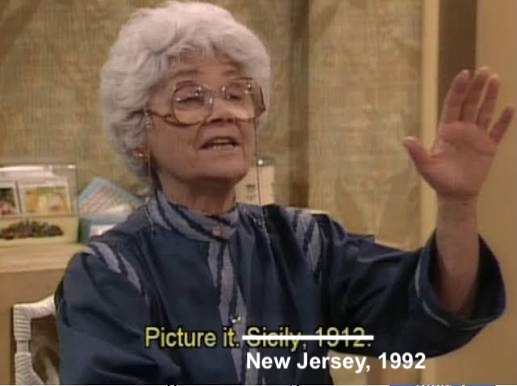
Specific time, place, industry, and size
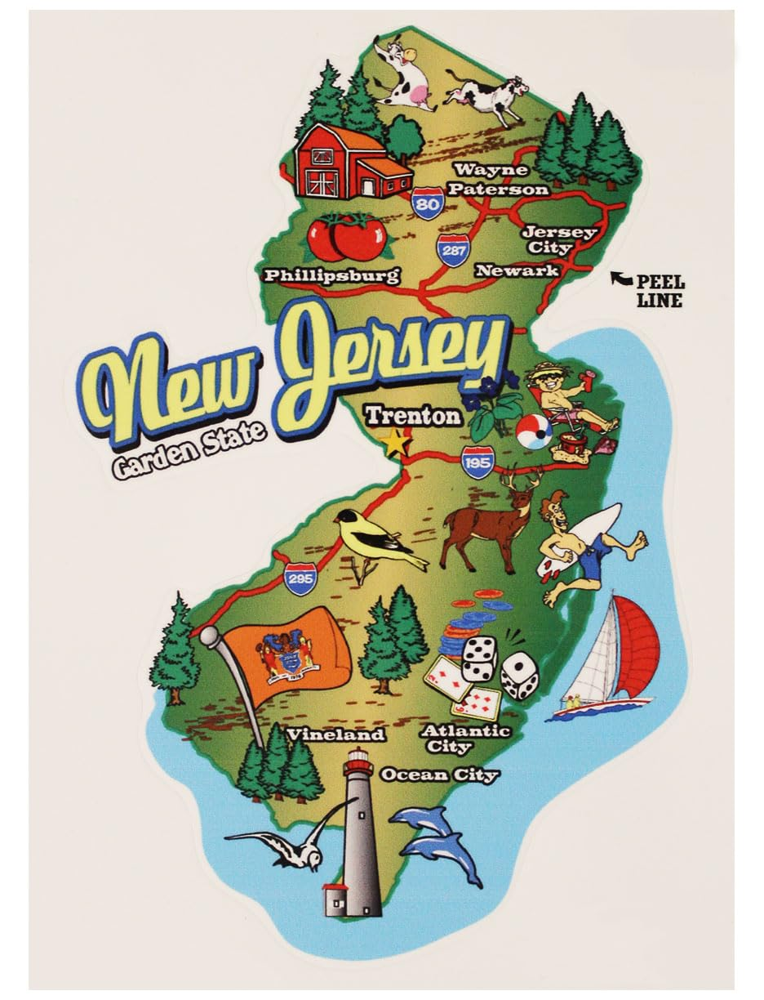
On April 1, 1992, New Jersey’s minimum wage rose from $4.25 to $5.05 per hour.
Did this policy change decrease employment in the fast-food industry?
🚨 Warning: this is a causal question!
If you’ve heard it once you’ve heard it a thousand times:
Correlation does not imply causation.
- However, we don’t care about the mere coincidence of the minimum wage going up and employment going down. We want to know if the wage hike is the root cause;
- Let’s be real from the jump: this is very difficult to isolate. But it is what we truly care about. So let’s not chicken out!
Wait, why doesn’t correlation imply causation?

Wait, why doesn’t correlation imply causation?
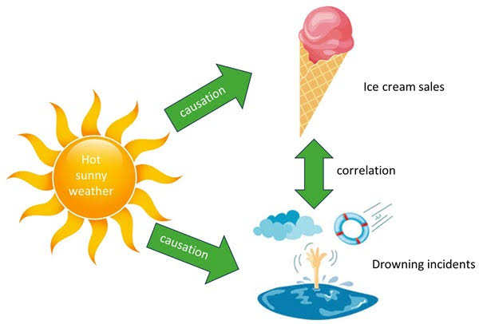
Because of the possibility of confounding
- It’s relatively easy to establish mere association. See here: https://tylervigen.com/spurious-correlations;
- Just because two variables are associated does not necessarily mean that one causes the other;
- Their observed association could be the result of a third thing (a confounder or lurking variable) that acts on both;
- If you were lucky enough to measure that confounder, then maybe you can account for its effects. If you weren’t so lucky, watch out!
- If you want to have a prayer of dealing with this, you need to think carefully about…
2. Data collection and study design
The ideal: a randomized experiment
- Recruit a large group of fast-food restaurants;
- Randomly assign half to raise their minimum wage and half to keep it unchanged;
- Let them operate normally for a suitable period of time;
- Measure employment afterward and compare the treatment and control groups;
- Because the groups were created by random assignment, any systematic difference in employment can plausibly be attributed to the wage increase.
Why is that ideal?
- Random assignment makes the treatment and control groups comparable from the start;
- On average, any differences between the groups are due to chance, not systematic differences in the kinds of restaurants they contain;
- This protects us from confounding, including confounders we didn’t even know to measure;
- If the groups differ systematically afterward, the minimum-wage increase is the most plausible explanation;
- In short: randomization gives us a credible comparison, and therefore a plausible basis for a causal conclusion.
The reality (for our example)
- Who the hell even has the power to impose such a thing?
- Who’s going to give you permission to do that?
- Why would restaurants (especially the ones being assigned to hike wages) agree to participate?
- How would the workers feel?
- How much would it cost to administer such a study?
. . .
For many causal questions we care about, cost, practicality, and ethics make it unfeasible to run the proper experiment that would actually be capable of answering the question.
Observational data
Just seein’ what happened.
The researcher “passively” collects measurements without intervening to manipulate anything. So they can’t dictate treatment versus control, and they don’t know if observed differences between groups are caused by the treatment or by some other lurking factors.
When experiments are unfeasible to carry out, these are the only data we have.
Observational data + causal inference = 🤮
As you learned at your grandmother’s knee:
Correlation does not imply causation.
If we observe a mere association in observational data, we have all of our work ahead of us to argue that there is nothing else going on, and therefore the association can plausibly support a causal interpretation.
🤔 Unless…
- The four-leaf clover of applied statistics is the so-called “natural experiment;”
- This is a special kind of observational study where you believe that “nature” has created variation in treatment versus control that acts as if an experiment were performed;
- If you’re lucky and careful and shrewd, maybe you can use these special observational data to tell a plausible causal story.
Example: military service and lifetime earnings
- Does serving in the military put you at an advantage or a disadvantage in terms of the amount of money you make over your lifetime (lifetime earnings)?
- We don’t care about mere conincidence. We care about the causal effect of military service on lifetime earnings;
- But obviously, we cannot run a laboratory experiment where we randomly assign subjects to tours of duty and then study their tax returns for the next twenty years.
. . .
Or can we?
The Vietnam Draft Lottery
Angrist (1990 AER)
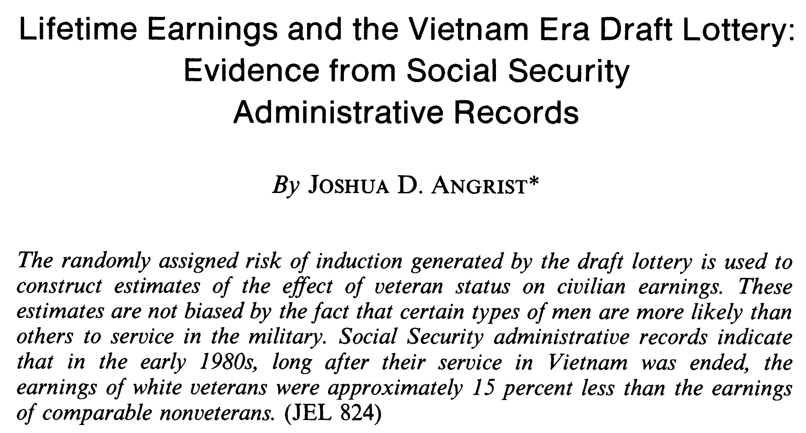
Back to the minimum wage

Card and Krueger (1994 AER)
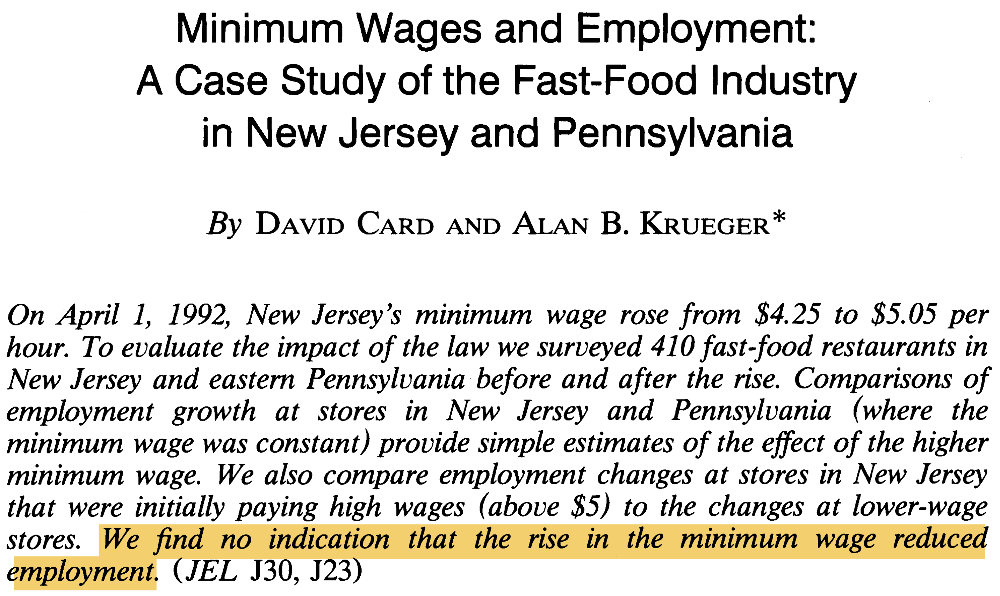
Card and Krueger’s main idea
- Restaurants on either side of the PA/NJ border are probably quite similar, but the NJ restaurants will be treated to a wage hike, and the PA restaurants will not;
- Because the placement of restaurants on either side of the border is largely arbitrary, we can compare these two groups as if an experiment were done;
- Any difference in employment patterns that we observe between the two groups can be attributed to the causal effect of the wage hike and not some other confounding factor.
So what did they do?
They surveyed restaurants before and after:
- Before the wage hike went into effect, they called a bunch of restaurants in both states and asked them about their business: how many workers they employ, the wage they pay, the prices they charge, etc;
- After the wage hike went into effect, they called the restaurants again and asked the same questions.
Any concerns about survey data?
- What if some restaurants don’t respond? (inevitable)
- If not, why not? Was non-response a random decision on their part, or are they hiding something?
- How accurate are their responses? Does the person I got ahold of actually know the answers to my questions, or is this just a guesstimate?
- Does the wording of the questions affect how they respond? (very possible)
. . .
Each of these is a source of uncertainty that affects the reliability of any downstream results.
Reality check
- You don’t just give up because the data aren’t perfect. They’ll never be perfect, if for no other reason that you would always enjoy more;
- Alternative definition of data science, statistics, etc: “learning to make do with the data you actually have;”
- Use the best techniques available to wring as much juice out of the data as possible…
- …BUT THEN, be honest and faithful and rigorous about the limitations of your results. That’s the whole uncertainty quantification part.
. . .
That last bit doesn’t always make statisticians the most popular (“can you please just tell me the 🤬ing answer?”), but it’s our professional duty 🫡.
Anyway, we have the data!
Behold, your second spreadsheet:
card_krueger <- read_csv("data/card-krueger.csv")
card_krueger# A tibble: 351 × 13
id chain co_owned state emp_diff wage_st wage_st2 hrsopen hrsopen2 fte
<dbl> <chr> <dbl> <chr> <dbl> <dbl> <dbl> <dbl> <dbl> <dbl>
1 56 Wendy's 1 PA -14 5 5.25 12 12 34
2 61 Wendy's 1 PA 11.5 5.5 4.75 12 12 24
3 445 Burger… 0 PA -41.5 5 4.75 18 18 70.5
4 451 Burger… 0 PA 13 5 5 24 24 23.5
5 455 KFC 1 PA 0 5.25 5 10 11 11
6 458 KFC 1 PA -0.5 5 5 10 10.5 9
7 462 Roy's 1 PA 2 5 4.75 12.5 12 15.5
8 468 Burger… 0 PA -29 5 5 18 18 58
9 469 Burger… 0 PA 4 5 4.5 18 18 26.5
10 470 Burger… 0 PA -2.5 5.5 4.75 18 18 28.5
# ℹ 341 more rows
# ℹ 3 more variables: fte2 <dbl>, meal_price <dbl>, meal_price2 <dbl>Aside: variable assignment <-
You just saw me do this:
card_krueger <- read_csv("data/card-krueger.csv")- This is called variable assignment. We’re saving an object so we can use it later;
- Right-hand side: the thing you want to store (the data);
- Left-hand side: the name you want to give it so you can refer to it later;
-
In the middle: the assignment operator
<-.
The anatomy of a data frame
A data frame is R’s version of a spreadsheet.
- each row of a data frame is an observation, in this case a restaurant;
- each column of a data frame is a variable, a piece of information that was recorded about that restaurant.
The dimensions
How many rows and columns?
So they surveyed 351 restaurants in all, and they recorded 13 pieces of information about each one.
Our variables
Each row is a restaurant, and for each restaurant, we record the following:
-
state: which state is the restaurant in? -
chain: which restaurant chain does the store belong to? -
co_owned: is the restaurant company owned? -
wage_standwage_st2: the starting wage in US dollars before and after policy change; -
fteandfte2: full-time-equivalent employment before and after the change, calculated as the number of full-time workers (including managers) plus 0.5 times the number of part-time workers; -
hrsopenandhrsopen2: number of hours open per day; -
meal_priceandmeal_price2: the price of a meal (soda, fries, entree); -
emp_diff:fte2 - fte.
Your first taste of variable types
The chain variable is an example of a categorical variable:
card_krueger$chain[1] "Wendy's" "Wendy's" "Burger King" "Burger King" "KFC"
[6] "KFC" . . .
The meal_price variable is an example of a numerical variable:
card_krueger$meal_price[1] 3.48 3.29 2.86 2.85 3.78 3.99. . .
The appropriate visualization or summary depends on the variable type.
3. Exploration
Baby’s first summary
How many restaurants do we observe in each state?
card_krueger |>
count(state)# A tibble: 2 × 2
state n
<fct> <int>
1 PA 66
2 NJ 285What restaurant chains are included?
card_krueger |>
count(chain)# A tibble: 4 × 2
chain n
<chr> <int>
1 Burger King 145
2 KFC 74
3 Roy's 87
4 Wendy's 45. . .
They did try calling McDonald’s restaurants, but they got very low response rates and chose to omit them from the study.
Aside: the pipe operator |>
The pipe operator passes what comes before it into the function that comes after it as the first argument in that function:
. . .
We will use it to build up data summaries and transformations step-by-step.
Like a Russian stacking doll
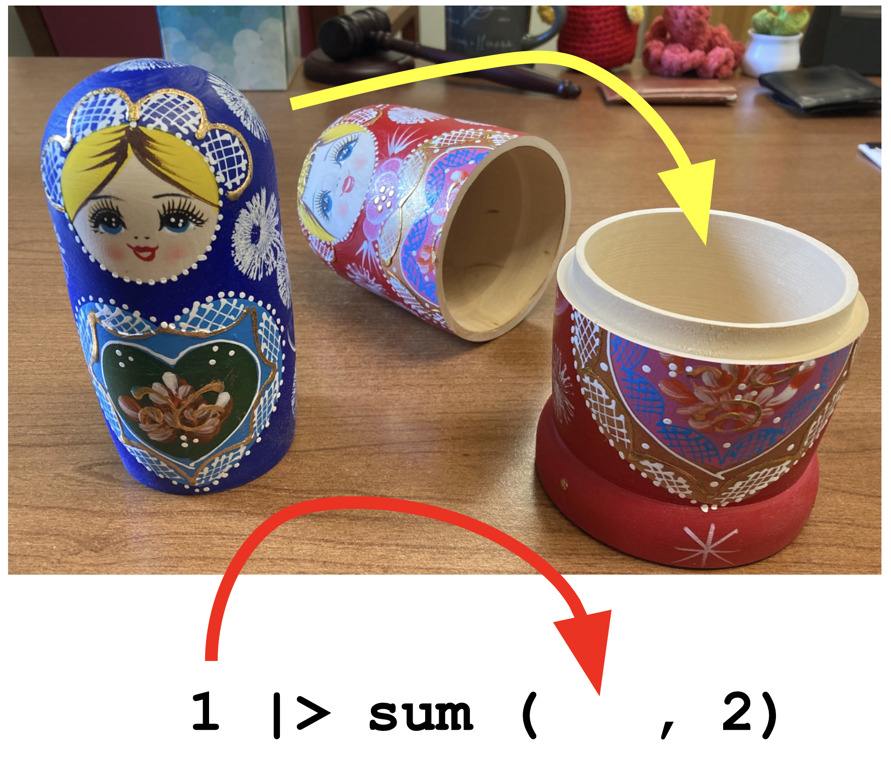
Next, let’s compare states
In order for Card and Krueger’s idea to hold water, the restaurants in NJ and PA should look broadly similar prior to the intervention.
So let’s compare:
- similar mix of chains?
- similar prices?
- similar operating hours?
- similar wages and employee counts prior to the wage hike?
Compare the mix of chains
These are the overall totals. How do we get the totals within the states?
card_krueger |>
count(chain)# A tibble: 4 × 2
chain n
<chr> <int>
1 Burger King 145
2 KFC 74
3 Roy's 87
4 Wendy's 45Compare the mix of chains
Make it a grouped data frame:
card_krueger |>
group_by(state)Compare the mix of chains
Subsequent calculations will now be done within the groups (eg. states):
Compare the mix of chains
To directly compare, let’s look at proportions:
# A tibble: 8 × 4
# Groups: state [2]
state chain n prop
<fct> <chr> <int> <dbl>
1 PA Burger King 30 0.455
2 PA KFC 10 0.152
3 PA Roy's 15 0.227
4 PA Wendy's 11 0.167
5 NJ Burger King 115 0.404
6 NJ KFC 64 0.225
7 NJ Roy's 72 0.253
8 NJ Wendy's 34 0.119Compare the mix of chains
Let’s make it easier to compare by eye:
# A tibble: 8 × 4
# Groups: state [2]
state chain n prop
<fct> <chr> <int> <dbl>
1 PA Burger King 30 0.455
2 NJ Burger King 115 0.404
3 PA KFC 10 0.152
4 NJ KFC 64 0.225
5 PA Roy's 15 0.227
6 NJ Roy's 72 0.253
7 PA Wendy's 11 0.167
8 NJ Wendy's 34 0.119Seriously, it’s just like Russian stacking dolls
Let’s compare meal prices next
Start with a blank canvas:
ggplot(card_krueger)
Let’s compare meal prices next
What variables are we looking at?
The aesthetic mapping is where we tell the computer what variables in the data frame we want to use and how we want to use them.
Let’s compare meal prices next
What kind of plot for this numerical variable:

Let’s compare meal prices next
Another option:
A density plot is a “smoothed out” histogram.
Let’s compare meal prices next
Add labels:
ggplot(card_krueger,
aes(x = meal_price)) +
geom_density() +
labs(
x = "Price in USD ($)",
title = "Meal prices prior to wage hike",
subtitle = "Meal = soda, fries, entree"
)
Y’know…so we know what we’re looking at!
Let’s compare meal prices next
Increase font size and give it a minimalist look:
Let’s compare meal prices next
Distinguish the two states with color:
Let’s compare meal prices next
Shade (fill) beneath the curves:
Let’s compare meal prices next
Make the color translucent:
ggplot(card_krueger,
aes(x = meal_price,
color = state,
fill = state)) +
geom_density(alpha = 0.5) +
labs(
x = "Price in USD ($)",
title = "Meal prices prior to wage hike",
subtitle = "Meal = soda, fries, entree"
) +
theme_minimal(base_size = 20)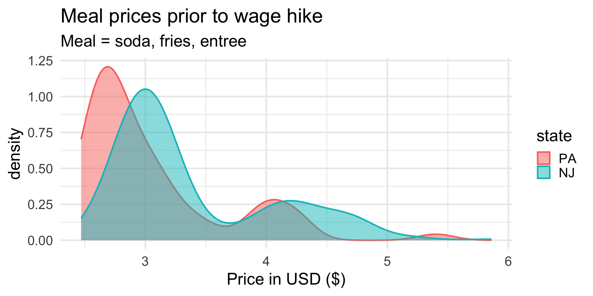
. . .
These distributions look pretty similar.
Dataviz with ggplot is like building a cake
- Every plot element is a new layer, and you stack ’em up;
- If the different commands are like the layers of sponge, then the plus signs in between are like the icing. Don’t forget the icing!
The grammar of graphics
This design philosophy is described in the book The Grammar of Graphics and implemented in the ggplot2 package.


Compare hours of operation (prior to NJ hike)

Compare starting wage (prior to NJ hike)
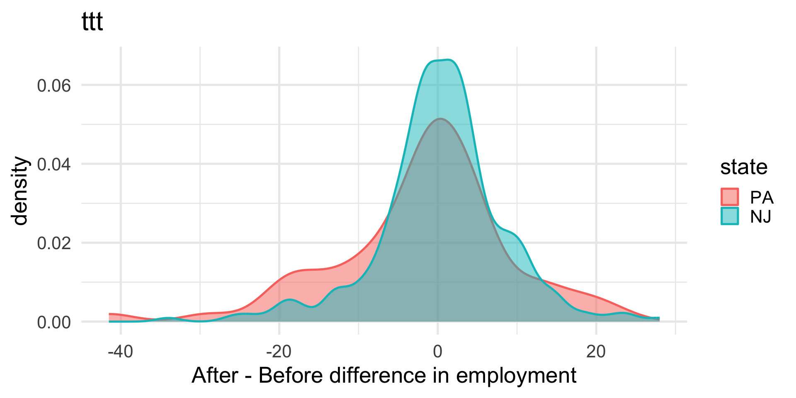
Compare number of workers (prior to NJ hike)
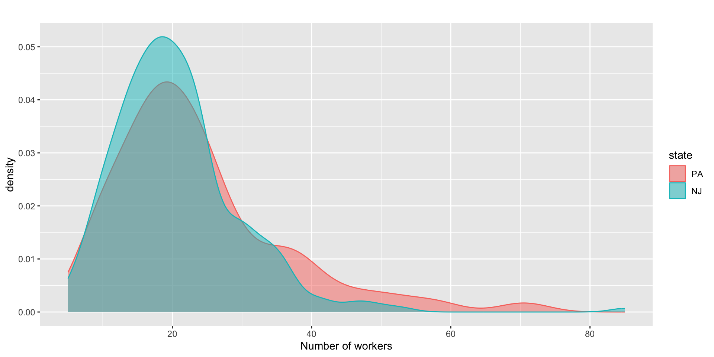
So far so good
These data seem to pass the first sanity check: prior to “treatment,” the restaurants looked roughly comparable across the two states. What about after treatment?
The emp_diff variable
This is employment after the wage hike minus employment before the wage hike:
-
emp_diff > 0: the restaurant added workers; -
emp_diff == 0: the restaurant didn’t change; -
emp_diff < 0: the restaurant shed workers.
If the ECON 101 story is correct, we expect emp_diff to be lower on average for NJ than for PA.
So how about it?
# A tibble: 2 × 2
state avg_emp_diff
<fct> <dbl>
1 PA -1.88
2 NJ 0.398. . .
Oh. That is…flipped from what we expected.
Pics or it didn’t happen
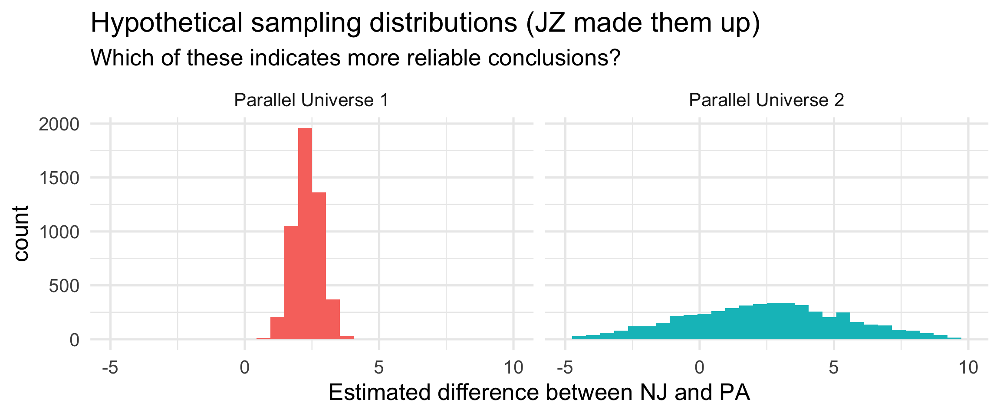
Pause
If the ECON 101 story is true, then the minimum wage hike should put NJ below PA, either adding fewer workers, or literally laying them off. Pictures and simple summaries are not showing that.
Now what?
4. Modeling
Data do not speak for themselves
- Pictures and summaries are powerful, and they can get you very far, but they cannot do everything;
- Data do not speak for themselves, and there is no such thing as a “neutral” analysis. We are always making assumptions, whether they are implicit or explicit;
- In general, it is better that our assumptions be explicit, and the most rigorous way to achieve this is with a mathematical model.
What do I mean by a “model”?
Think of the “line of best fit:”
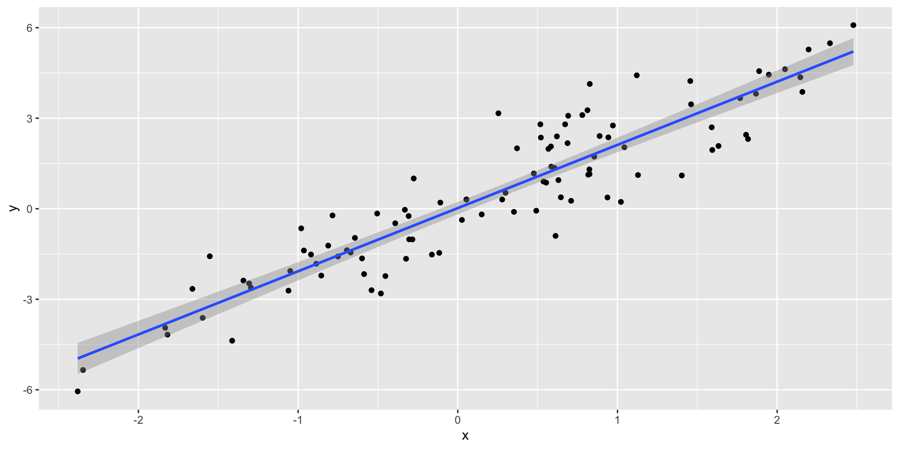
. . .
This is an example of a linear regression model. All of the models in our class will have this flavor.
Why do we need one here?
(this is where things will start to get technical…)
. . .
Our analysis has several ingredients:
- Response variable \(y_i\): that’s
emp_diff; - Treatment variable \(T_i\): the
state, NJ or PA; - Extra covariates \(\mathbf{x}_i\):
chain,hrsopen,meal_price, etc.
. . .
Our goal is to estimate the (causal!) effect that the treatment has on the response. In order to make sure we are isolating the causal effect of the treatment, unconfounded by other factors, we may want to control for the extra covariates. A model helps us do this.
The only equation today
(feel free to avert your gaze)
. . .
Here’s a linear regression model for the data:
\[ y_i = \alpha + \tau T_i+\mathbf{x}_i^{\scriptscriptstyle\mathsf{T}}\boldsymbol{\beta}+\varepsilon_i, \]
where \(y_i\) is emp_diff, \(\mathbf{x}_i\) is a collection of covariates, and
\[ T_i = \begin{cases} 0 & \text{for PA}\\ 1 & \text{for NJ}. \end{cases} \]
. . .
So \(\tau\) is the average difference between emp_diff in NJ and in PA. ECON 101 says this should be negative. Our exploratory analysis looked like it was zero, or possibly even positive.
It’s not as bad as it looks
- In this class, math is primarily a language that we will use to concisely communicate certain technical ideas;
- You will not do a tremendous amount of math in the sense of pencil-and-paper calculations, but you will be expected to read and interpret certain mathematical expressions;
- In a few weeks you will start to see a lot of equations like the previous slide, and we will help you become a fluent reader of them.
Estimating the model in R
There’s that pipe again:
linear_reg() |>
fit(emp_diff ~ state + chain + co_owned, data = card_krueger) |>
tidy()# A tibble: 6 × 5
term estimate std.error statistic p.value
<chr> <dbl> <dbl> <dbl> <dbl>
1 (Intercept) -1.45 1.21 -1.20 0.232
2 stateNJ 2.28 1.20 1.91 0.0575
3 chainKFC 0.235 1.30 0.181 0.857
4 chainRoy's -2.08 1.32 -1.58 0.116
5 chainWendy's -0.757 1.49 -0.507 0.612
6 co_owned 0.373 1.10 0.339 0.735 . . .
The estimate on stateNJ is what we interpret as the treatment effect.
Interpretation
Our estimate of the treatment effect is roughly 2.3, with a standard error of 1.2;
- On average, employment increased by about 2.3 more workers in New Jersey restaurants than in Pennsylvania restaurants. So if anything, NJ had a better outcome compared to PA;
- The standard error is a metric that speaks to uncertainty quantification. The larger it is, the less certain we are of the estimate. More on this later.
BTW: three cheers for reproducible research
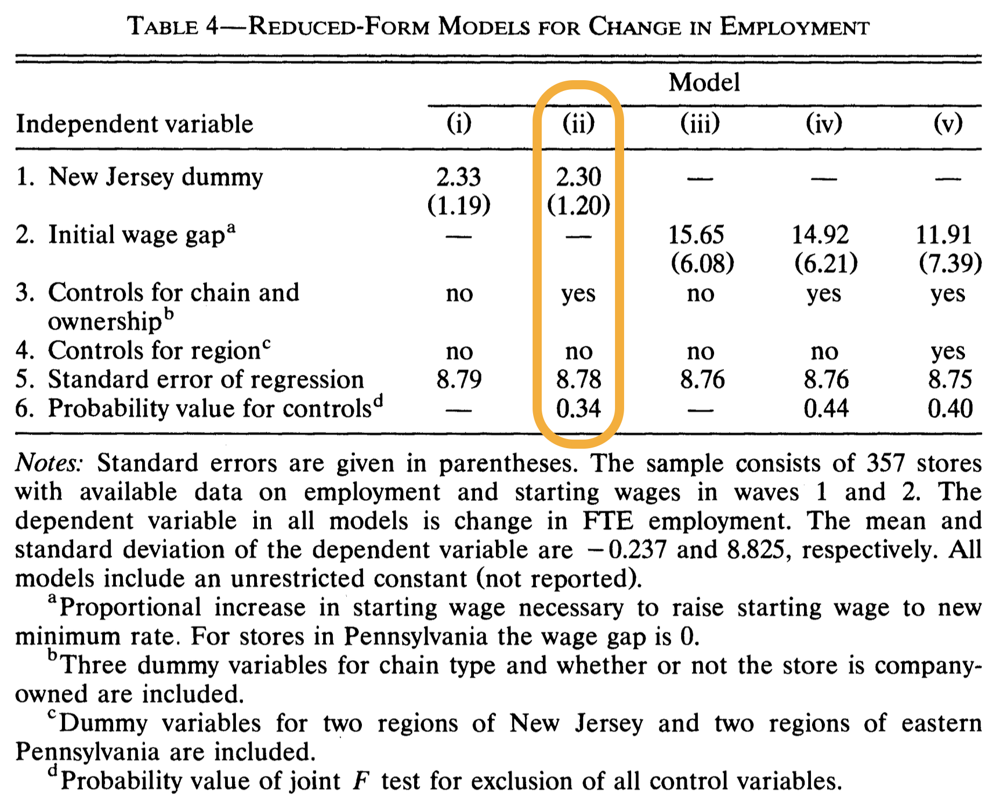
5. Statistical inference
Our point estimate
Our headline finding:
On average, employment increased by about 2.3 more workers in New Jersey restaurants than in Pennsylvania restaurants. So if anything, NJ had a better outcome compared to PA.
. . .
Is this a slam dunk, money-in-the-bank, bulletproof result? Of course not. It’s the best we can do with the imperfect data we have. So let’s be honest and faithful and say something about its reliability.
What do we mean by reliability?
- What’s the worry? That our result is simply a fluke. We got unlucky, the data we collected are quirky and unrepresentative, and the estimate is an aberration;
- If we collect more or different data, redo the analysis, and the result totally changes, how reliable could it be?
- In this class, we will consider a result more reliable if it stays approximately the same across alternative datasets.
. . .
How can we evaluate that?
Sampling variation
- If you want to know how the results change across datasets…redo the survey;
- Call up more restaurants, redo the analysis, see if the results change. Easier said than done, but what if?
- The variation of your estimates across these different datasets is called sampling variation;
- If the variation is high, that’s bad for reliability. If the variation is low, that’s better;
- Quantifying the extent of this variation allows you to report on the uncertainty of your conclusions.
Different data, different result
Redo the survey and get a new data frame:
# A tibble: 351 × 4
emp_diff state chain co_owned
<dbl> <fct> <chr> <dbl>
1 -2 NJ KFC 0
2 6 NJ Burger King 0
3 -3 NJ Roy's 1
4 3.25 PA KFC 1
5 0 PA Wendy's 0
6 4 NJ KFC 0
7 2 NJ Burger King 1
8 2 NJ Burger King 1
9 14.8 NJ KFC 1
10 2.5 NJ Burger King 0
# ℹ 341 more rowsRerun the regression and get a new estimate:
linear_reg() |>
fit(emp_diff ~ state + chain + co_owned, data = card_krueger_new) |>
tidy() |>
select(term, estimate, std.error)# A tibble: 6 × 3
term estimate std.error
<chr> <dbl> <dbl>
1 (Intercept) -0.187 1.12
2 stateNJ 0.689 1.13
3 chainKFC 0.677 1.34
4 chainRoy's -1.98 1.32
5 chainWendy's -0.0917 1.39
6 co_owned 0.0815 1.07Different data, different result
Redo the survey and get a new data frame:
# A tibble: 351 × 4
emp_diff state chain co_owned
<dbl> <fct> <chr> <dbl>
1 8.5 NJ Burger King 1
2 -0.5 NJ Roy's 1
3 5.5 NJ Burger King 1
4 -2 NJ KFC 0
5 -1.5 NJ KFC 1
6 2.5 NJ Burger King 0
7 3.5 NJ Burger King 0
8 4 NJ Burger King 0
9 0 NJ Burger King 0
10 8.25 NJ Burger King 0
# ℹ 341 more rowsRerun the regression and get a new estimate:
linear_reg() |>
fit(emp_diff ~ state + chain + co_owned, data = card_krueger_new) |>
tidy() |>
select(term, estimate, std.error)# A tibble: 6 × 3
term estimate std.error
<chr> <dbl> <dbl>
1 (Intercept) -1.02 1.32
2 stateNJ 1.26 1.27
3 chainKFC 0.0746 1.29
4 chainRoy's -1.72 1.36
5 chainWendy's -0.707 1.69
6 co_owned 1.29 1.14Different data, different result
Redo the survey and get a new data frame:
# A tibble: 351 × 4
emp_diff state chain co_owned
<dbl> <fct> <chr> <dbl>
1 -6.5 NJ KFC 0
2 -4 NJ Burger King 0
3 -7 NJ Roy's 1
4 -13 NJ KFC 1
5 -1.5 NJ Burger King 0
6 2.5 NJ KFC 1
7 19 PA Burger King 0
8 3.5 NJ Burger King 0
9 13.2 NJ Roy's 1
10 -3 NJ KFC 0
# ℹ 341 more rowsRerun the regression and get a new estimate:
linear_reg() |>
fit(emp_diff ~ state + chain + co_owned, data = card_krueger_new) |>
tidy() |>
select(term, estimate, std.error)# A tibble: 6 × 3
term estimate std.error
<chr> <dbl> <dbl>
1 (Intercept) 0.930 1.18
2 stateNJ 0.438 1.15
3 chainKFC -0.751 1.21
4 chainRoy's -3.05 1.22
5 chainWendy's -1.82 1.41
6 co_owned 0.333 0.996The Full Monty
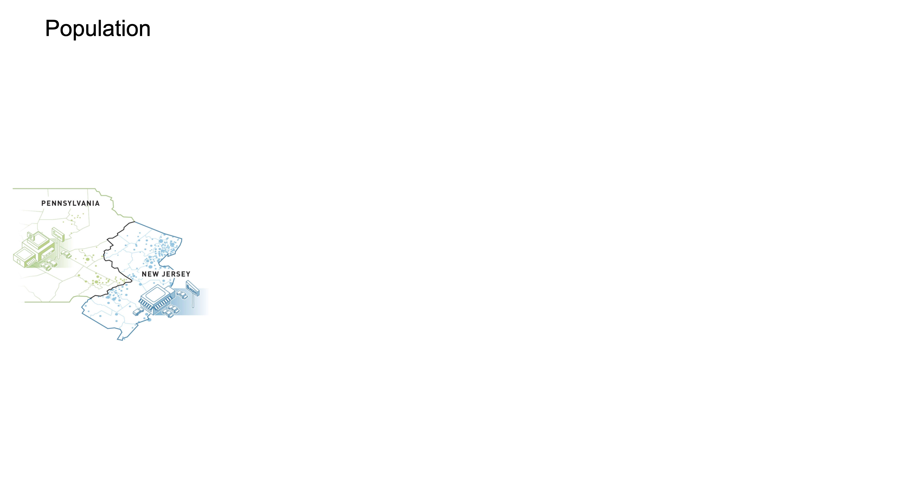
The Full Monty
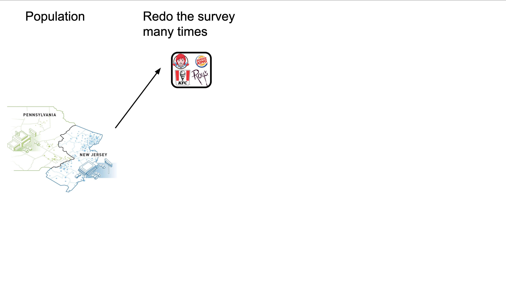
The Full Monty
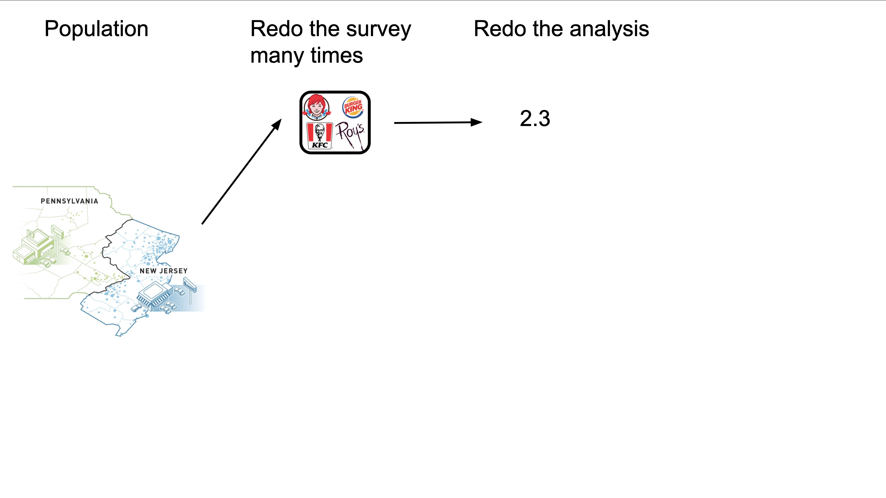
The Full Monty
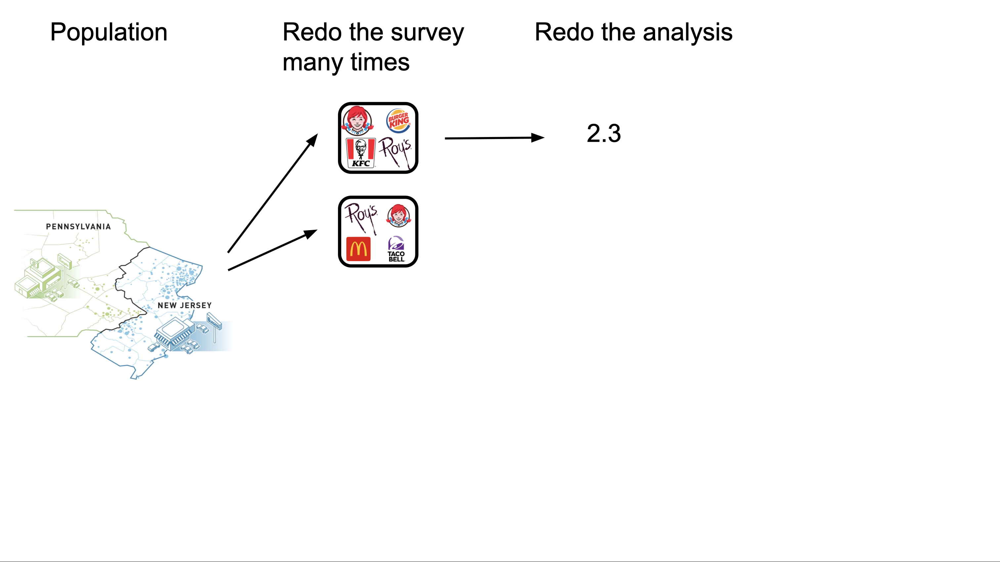
The Full Monty
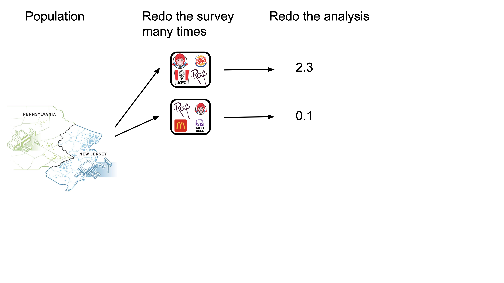
The Full Monty
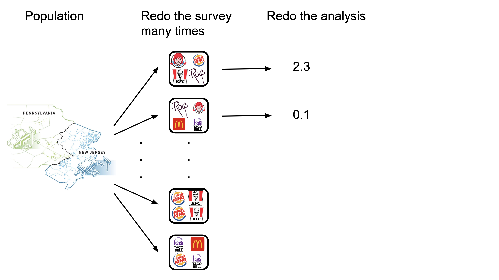
The Full Monty
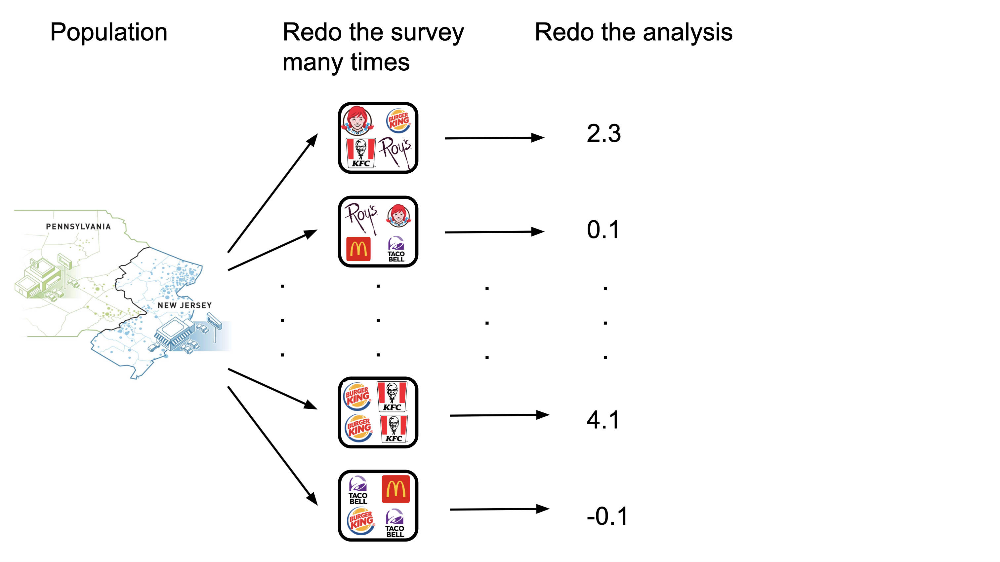
The Full Monty
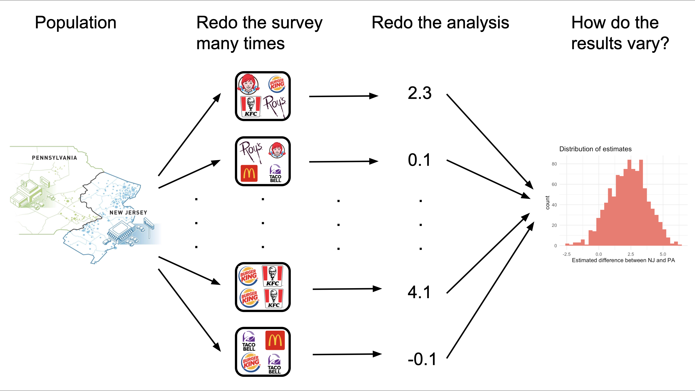
The sampling distribution for our example
What do you think? Are our conclusions reliable?
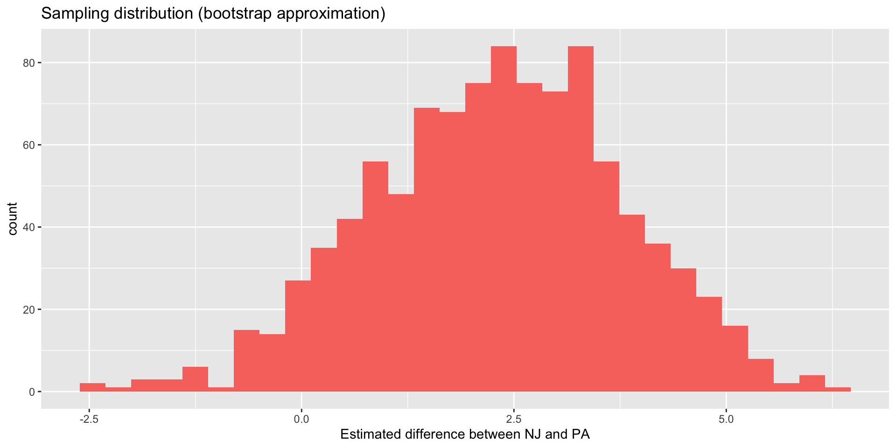
Conclusion
- Genuine uncertainty remains about the specific numerical value;
- 2.3 may be our best guess, but if “the truth” ends up being 0, 1, 3, 4, or 5, don’t be surprised. Based on the data we have, you can’t rule that out;
- However, the data are speaking pretty loudly that the estimate is more likely to be positive than negative; Qualitatively, the evidence for the usual ECON 101 story is looking weak.
Towards quantifying uncertainty
What if our sampling distribution had looked like one of these?

. . .
Measuring the spread of the sampling distribution allows us to quantify uncertainty about the conclusions. That’s what the standard error does.
Reality check
- This idea of “redoing the survey to see how the results change” is more of a thought experiment;
- If collecting new data were so easy, we would have collected a bigger sample to begin with;
- Instead of literally collecting new data, which is costly, statisticians approximate sampling variability. We will study two techniques for doing this:
- simulation-based: resampling the data with the bootstrap;
- mathematical: appealing to the central limit theorem (CLT).
. . .
More on all that in…nine weeks.
6. Interpretation
At the end of the day
Data analysis is just a sophisticated form of rhetoric. We’re trying to marshall facts to convince other humans of claims. If a living, breathing person is not convinced, then none of it actually matters.
So…
Do you believe it?
Card and Krueger argue that the placement of restaurants on either side of the NJ/PA border acts as if an experiment took place, and so any observed discrepancy between the two states can largely be attributed to the causal effect of the minimum wage hike alone.
. . .
Do you think this is plausible?
Things to keep you up at night
- Let’s face it: this wasn’t an experiment; Random assignment did not take place here;
- NJ chose to raise the minimum wage for specific reasons, and PA didn’t. If those reasons mean that underlying conditions in NJ are systematically different from those in PA, this could confound the relationship;
- If NJ was on a different economic trajectory to begin with (NJ on the upswing and PA on the downswing), then we might be observing that difference, and nothing to do with the minimum wage;
- Was “before” really “before”? NJ restaurants knew in advance that the wage hike was coming. It wasn’t a surprise. How do we know they hadn’t already started adjusting before Card and Krueger made their first call?
- Even if we found the causal argument completely convincing, does it generalize? What, if anything, can this study teach us about larger wage hikes in different industries elsewhere?
Parting thoughts
Further reading
Dive in if you’re interested:
- WSJ March 2026: “The 30-Year Debate Over the Minimum Wage Is Still Not Settled” (featuring an unhinged comment section);
- Card and Krueger’s original paper and Card’s Nobel citation (popular and advanced);
- The more recent Seattle Minimum Wage Study;
- Neumark and Shirley’s 2021 literature review: “there is a clear preponderance of negative estimates in the literature;”
- Noah Smith is an opinion journalist with an economics PhD:
Intellectual themes
These will last us fifteen weeks (and then some!):
- Data analysis is essentially rhetoric. We’re marshaling evidence in order to be convincing to other humans. Don’t forget your audience;
- All data analyses should be reproducible. Give me the same data (and code) that you used, I should be able to get the exact same pictures and numbers. R + Quarto make this easier to achieve;
- Even a small data set is too much information for a human to process. We need to compress it down to pictures and a concise set of numerical summaries. Doing this well is as much art as it is science;
- When analyzing data, so often the questions that we truly care about are causal questions. It’s silly to bury our heads in the sand and pretend that’s not true, but it’s also dangerous to recklessly make causal claims that your data cannot support;
- The gold standard for isolating a causal effect is a randomized, controlled experiment, but sometimes these are costly and impractical (or downright unethical) to perform;
- Observational data can sometimes support causal claims, but causation does not magically emerge from comparing two groups. You need a design and an argument about why the comparison isolates the treatment;
- Data do not speak for themselves. Every analysis requires assumptions about how the world works. Explicit mathematical models force us to state those assumptions clearly;
- Data are not manna from heaven. The data collection process is subject to countless flaws and compromises, and at some point you need to get on with it and make do. We’re trying to do the best we can with what we’ve got;
- But because of that, all data analysts have a responsibility to honestly and faithfully report the limitations of their results by quantifying uncertainty. That’s what statistics is all about.
Computational themes
Every coding task in this class will be some combo of these two things:
. . .
Building cakes (ggplot)
Stacking dolls (pipe |>)
. . .
Master these, and everything will be coming up roses!
Long-term plan
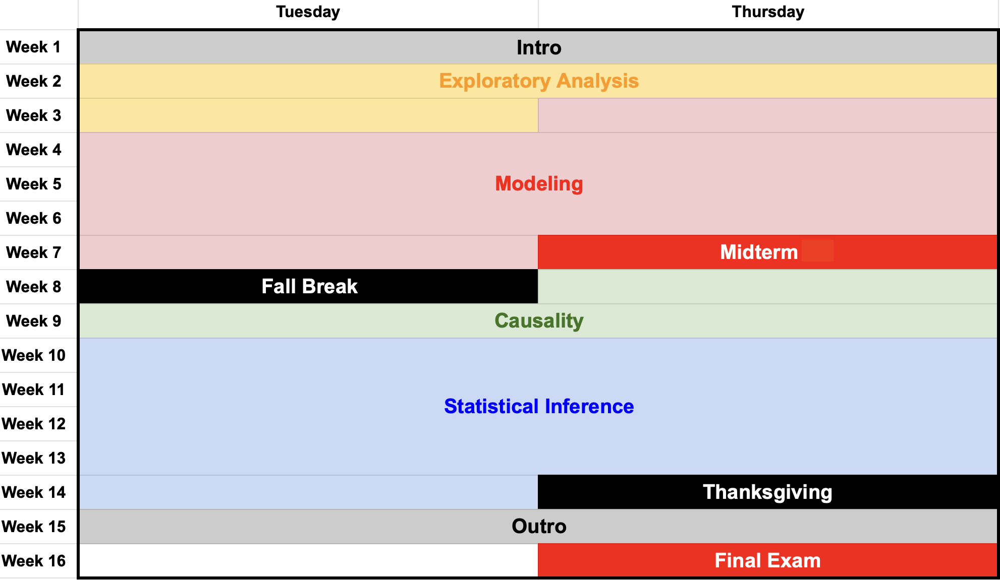
Near-term plan
- Tomorrow: no graded assignment. Follow along with the TA and get your first taste of writing R code from scratch;
- Next TuTh: lectures on exploratory data analysis. More live practice with data viz and transformation in R;
- Next Friday: first graded lab, and HW 1 posted.
. . .
Also, please complete the Getting to Know You Survey.